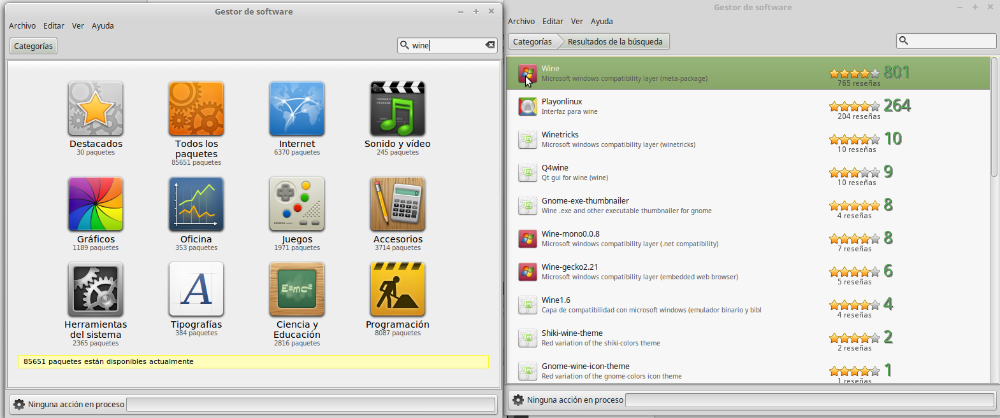
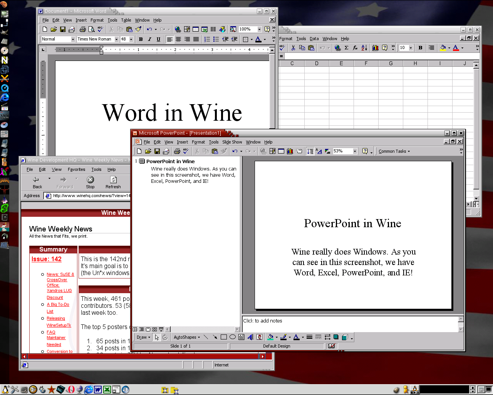
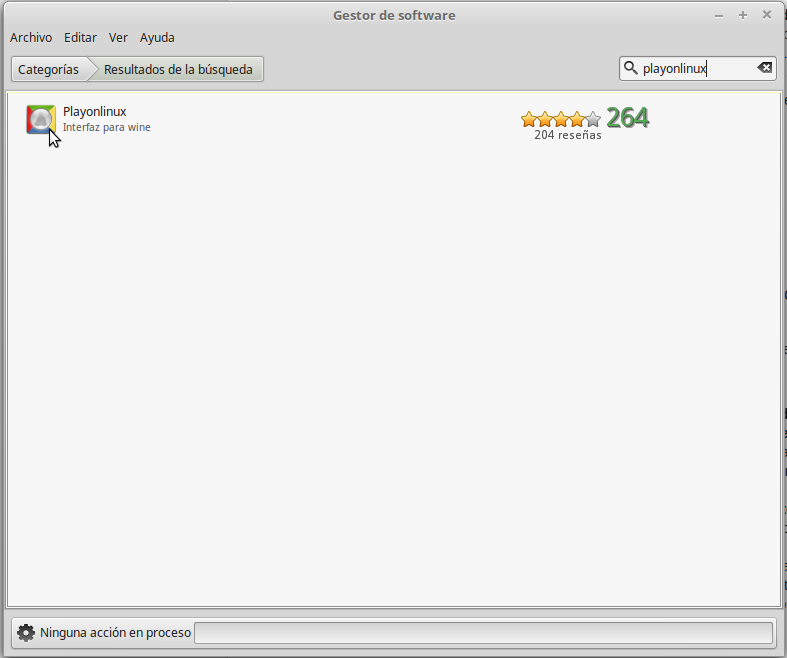

Aplicaciones Windows sobre Linux
Ejecución de Aplicaciones Windows sobre Linux/Vitalinux
Con la finalidad de suavizar al usuario final el paso de Microsoft Windows a Linux, además de crear Interfaces de Usuario y Entornos de Escritorio muy similares a los que existen en Windows, también se ha desarrollado un sofware libre llamado WinE que permite la instalación y ejecución de programas creados para Windows en Linux Mint.
Para instalarlo debes buscar Wine en el Gestor de Software e instalarlo:


WinE nos permite instalar aplicaciones Windows sobre Linux/Vitalinux
A modo de ejemplo, mediante WinE podríamos instalar en Linux/Vitalinux las siguientes aplicaciones:
- Microsoft Office. Podría instalarse el paquete ofimático Microsoft Office en Vitalinux a través de Wine, pero no hay que olvidar que este software es privativo, y que por tanto requiere de una licencia en vigor. En caso contrario estaríamos infringiendo la ley (es ilegal instalar software privativo de manera pirata sin la licencia correspondiente) y podría penalizarse con una multa, cosa que sería de recibo en un Centro Educativo. A priori, este software no se preinstala en Vitalinux a través de Wine al carecerse de licencias en vigor, y por que existe un software equivalente: LibreOffice
- PhotoShop. Podría comentarse lo mismo que en el caso anterior. A priori, este software no se preinstala en Vitalinux a través de Wine al carecerse de licencias en vigor, y por que existe un software equivalente: Gimp
- Juegos. Tal vez sea el uso más común de Wine: instalación de juegos creados para Windows en Linux. La razón de que este sea su uso habitual es porque en el caso de los juegos no existe una alternativa equivalente para Linux (los Juegos para entorno PC normalmente sólo están disponibles para Windows)
Para saber más sobre Wine se recomienda dirigirse a los siguientes enlaces:
Puedes observar cómo usar wine en este videotutorial:
Instalar Aplicaciones Windows sobre Linux Mint mediante PlayOnLinux
Llegado este punto habrás advertido que WinE nos permite la instlación de aplicaciones Windows en Linux, pero presenta algunos inconvenientes entre los cuales cabría destacar los siguientes:
- A priori, Wine no nos garantiza un 100% de probabilidad de que una aplicación Windows se instale de manera exitosa sobre Linux. En ocasiones la aplicación Windows que queremos instalar depende de algún parche de Windows (Service Pack) o librería que no esta disponible en nuestro Wine provocando una instalación fallida
- Determinadas aplicaciones Windows requieren una determinada versión de Wine (1.6, 1.7, ..., 2.4) para funcionar. Esto es un gran problema, ya que a priori sólo podemos tener instalada una única versión de Wine
- Al igual que en Windows, y a diferencia de Linux, para instalar una aplicación sobre Wine previamente tenemos que buscarla por Internet, fiarnos de ella, y descargarla. En ocasiones, el software de Windows que nos descargamos esta infectado o realiza acciones que desconocemos poniendo en jaque a nuestro sistema
Con la finalidad de evitar lo anterior surge en Linux el software PlayOnLinux. Éste se caracteriza por:
Dispone de un repositorio público de aplicaciones Windows ya testeadas y comprobadas, al estilo Linux. De esta forma, tan sólo tenemos que elegir que programa deseamos instalar y PlayOnLinux hará el resto:
- PlayOnLinux se conectará con sus repositorios de Internet para buscar el software deseado. Gracias a esto no tendremos que ir por Internet perdiendo el tiempo buscando software en Sitios Webs como Softtonic
- Descargará de forma desatendida la última versión de ese software que haya sido testeado y comprobado. Gracias a ello no tendremos que desconfiar en lo que nos estamos instalando, además de asegurarnos de que ese software va a funcionar correctamente en Linux
En caso de que el software que deseamos instalar no este disponible en los repositorios de PlayOnLinux tendremos la opción de instalarlo igualmente al estilo Wine, pero con la ventaja de que podemos instalar y configurar la versión de Wine que nos interese, además de poder instalar de forma muy sencilla los parches y librerías de Windows que puedan ser requeridos.
Play on linux está disponible también en el Gestor de Software:

Puede aprender cómo usar PlayOnLinux en este videotutorial: